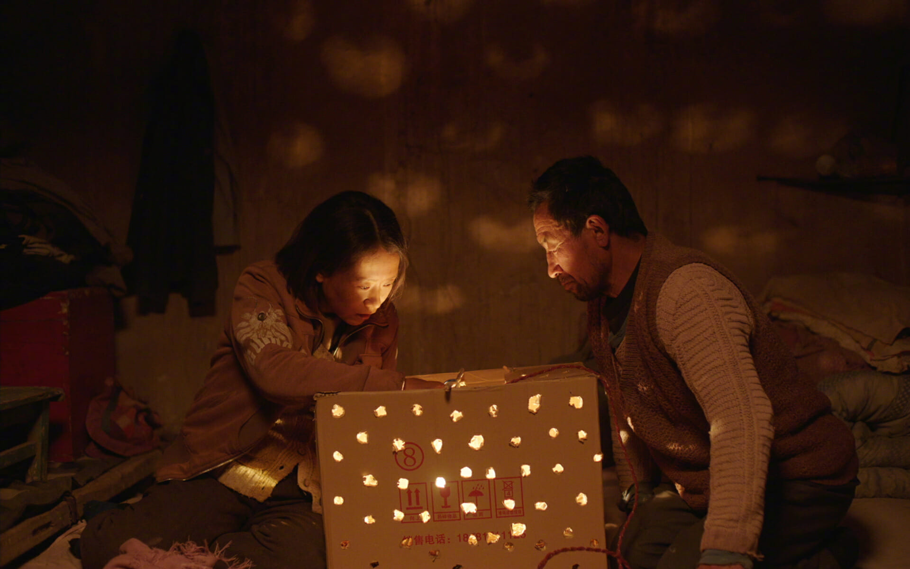

马老四的出场是在干农活时被三嫂催着出来见相亲对象曹贵英。平日里，谁会在意驴棚铲屎官马老四有没有按时出现在饭桌上。
马有铁，行四，村里人习惯叫他马老四，以至于都忘了他的大名。兄弟四人，三个哥哥分别占了金、银、铜，到他这里，已然是最不值钱的“有铁”。他就像个影子，默默地生活在三哥家后院的小土坯房里，被他那又精又蠢的三哥马干吃尽。村里人调侃他被三哥压榨了这么多年，结婚都不舍得给他摆几桌酒，更甭说买个电视，他不吱声，只是处处护着曹贵英。
马老四自闭、善良，愚而不昧、钝而不蠢，他知道谁好谁不好、也知道别人心里在算计什么，但他不计较，一辈子温良恭俭让。他是个典型的宿命论者，相信万物皆有命数——面对命数，“能说个啥”。
曹贵英同样是个苦命人，一度认为驴都比她命好。跟马老四过了半个寒暑，日子刚有点儿起色，就一头淹死在村口的水沟里，连张像样的遗像都没有，还得用结婚照来裁。这半年短暂光阴，便是她用一生的气数换来的。
下葬前，马老四用麦粒在她手上按了朵花儿，“跑到哪里都丢不掉了”，有个记号，下辈子也好找。马老四仿佛又该回到以前那个不被人在意的日子里，但他回不去了，他知道那就像以往在三哥家吃馍不吃菜一样乏味。要让人始终安于现状，就不能让他见一丁点儿世面。
料理完后事，马老四补上了牧民的土豆、放生了驴子、清了供销社的赊账、还了借的鸡蛋……这辈子，宁教天下人欠我，莫教我欠任何人。
马老四喝了农药，还吃了个鸡蛋，农药加个蛋，神仙干瞪眼。马老四吃着鸡蛋，望着墙上的曹贵英，颤抖的手拿起她编的草驴端详着，平静得就像等着回家的大巴发车而已。
马老四死后，他侄子“继承”了他的猪和鸡，至于那间马老四和泥垒墙、曹贵英做梦也没想过属于自己的土坯房，在别人眼里，不过是一万五的拆迁款罢了。而马老四的下落，与其说些晦气的真话，不如就用“进城过好日子去了”搪塞过去，这样大家面子上都好过。
有人说，马老四没死，被抢救过来了，片尾字幕最后一行小字为证：“2011 年冬，老四马有铁在政府和热心村民的帮助下，乔迁新居，过上了新生活。”这个嘛，心诚则灵，开心就好。